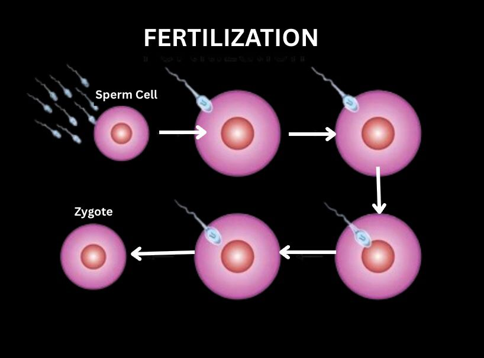
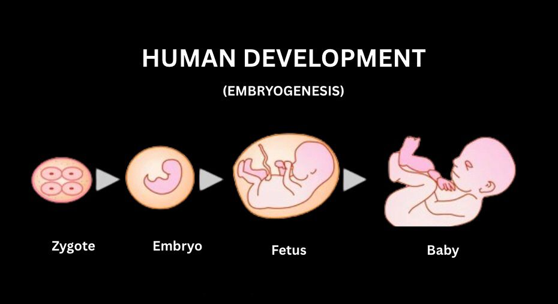

All creatures, from the tiniest insect to the blue whale, have one simple task: reproduction. It's how life continues and how species survive.
Two Main Types of Reproduction
Sexual Reproduction
- Most animals make use of sexual reproduction. During this process, two parents contribute genetic material to produce offspring with new combinations of traits.
- The diversity raises the chances of species adapting to changing conditions.
- Think of the courtship dance of birds, fish migration to spawning grounds, or the combat rituals some animals perform before they even conceive.
- These behaviors prove that reproduction is not just mechanical but deeply connected to the rhythms of survival and life.
Asexual Reproduction
- Common with less complex organisms like starfish or some worms, single parent contribution.
- This parent generates a perfect genetic duplicate of itself (clone), usually through the process of budding, splitting, or regeneration.
- It is a good technique that works effectively in stable environments, but not much genetic variety is allowed.
Fertilization
- Fertilization is where the journey actually begins.
- Most animals have it happen inside the female's body, this is called internal fertilization. Mammals, birds, and reptiles all use this method.
- Frogs and fish tend to rely on the process of external fertilization, where sperm and eggs are let loose in the surroundings, usually water, to find each other and combine.
- They both do the same thing: combining the raw materials of life.

Post-Fertilization
- Following fertilization, the resulting cell produced, called a zygote, starts dividing and increasing.
- The process leads to the formation of an embryo and eventually a mature offspring. The way an animal develops is based on the animal's species.
- Some animals produce eggs when giving birth, e.g., birds, amphibians, and most fishes. They are known as oviparous animals. The embryo is formed inside the egg until it is ready to hatch, typically by a shell, jelly cover, or even buried inside sand.
- There are others, like mammals, which are viviparous, they give birth to live young. These are animals who carry the developing embryo inside their bodies, warm them, feed them, and shield them.
- And then there is a totally fascinating middle group: ovoviviparous animals. These have animals, like sharks and snakes, who develop eggs inside their bodies, but instead of laying them, the eggs hatch inside and the young are born alive.
Development
As youth develop, they progress through varied development stages: zygote, embryo, fetus, and finally, newborn. Although we find it easier to think of development as a purely biological phenomenon, it is also a time of exposure and care. Most animals go to great lengths to protect their offspring both prior to and after this process. Birds build nests high up in trees, mammals nurse and lick babies, and certain reptiles sit on eggs for weeks at a time.

Parental Investment
Parental investment varies among species. Some, like sea turtles or frogs, lay hundreds of eggs but give them no additional care. Their tactic is in terms of numbers, many may perish, but a few will survive. Others, like whales, elephants, and most birds, produce fewer offspring but invest huge amounts of time and energy to raise them. These are two distinct evolutionary paths, yet they both stem from the same motive: giving the next generation an opportunity.
Conclusion
Learning about animal reproduction and development does more than inform us about how life is made, it reminds us of the ways all living organisms are related. When a mother cat gently pushes her kittens or a penguin tucks its chick under its wing in the midst of a cold storm, it tells us that love and concern are not unique to human beings. They are reminiscences of our own origin, narrated in feathers, fins, fur, and scales.
In the end, reproduction is not only a physical necessity, it's nature's most intimate promise. A promise that life, no matter how small or untamed or scattered, will find a way to endure, to flourish, and to begin again.
Written by Aisha Alduhoori